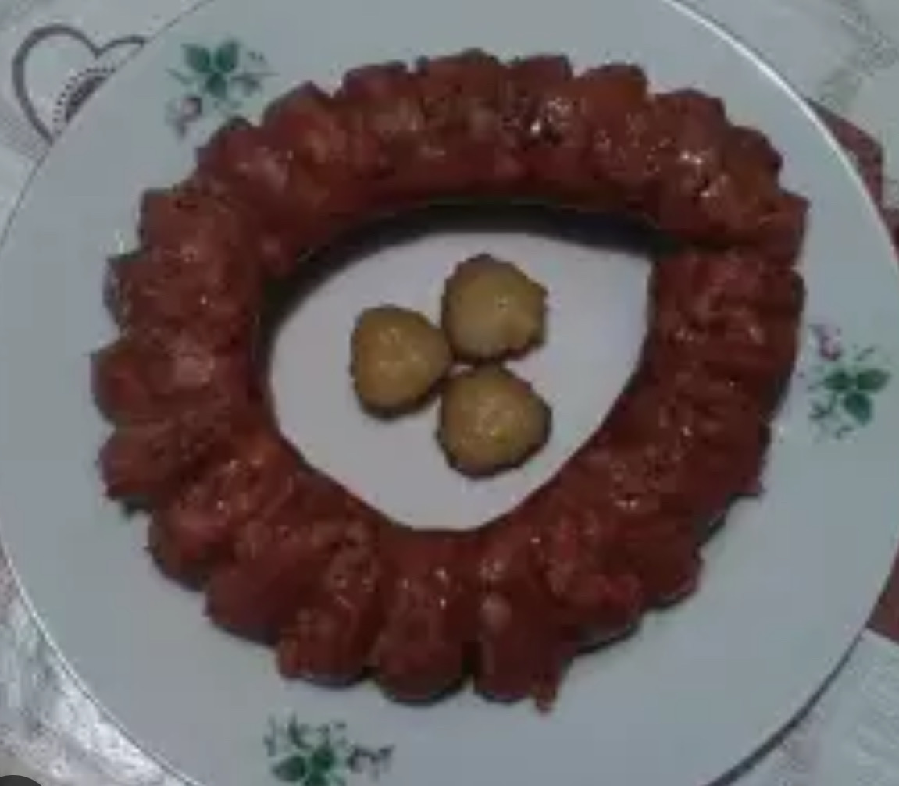

Grătar
Chiftea de porc
0.80 бр / 2.60 лв
Carne tocată suculentă de porc, friptă perfect.
Kebab de porc
0.80 бр / 2.60 лв
Kebab condimentat fript pe cărbuni.
Frigăruie de porc
0.100 кг / 5.50 лв
Frigăruie de porc cu ardei și ceapă.
Ceafă de porc
0.200 кг / 11.50 лв
Ceafă fragedă friptă perfect.
Coaste de porc
0.250 кг / 11.50 лв
Coaste fragede cu crustă crocantă.

Cârnat de casă
0.200 кг / 11.50 лв
Cârnat suculent în stil tradițional.
Pljeskavica de porc + cartofi
0.200 кг / 10.50 лв
Pljeskavica mare cu cartofi prăjiți.
Chiftea de vită
0.100 кг / 5.00 лв
Chiftea fragedă cu aromă afumată.
Pljeskavica de vită + cartofi
0.200 кг / 11.80 лв
Pljeskavica de vită cu garnitură.
Piept de pui
0.200 кг / 11.50 лв
Piept de pui fript – ușor și suculent.
Frigăruie de pui
0.130 кг / 5.50 лв
Bucăți de pui fripte cu legume.